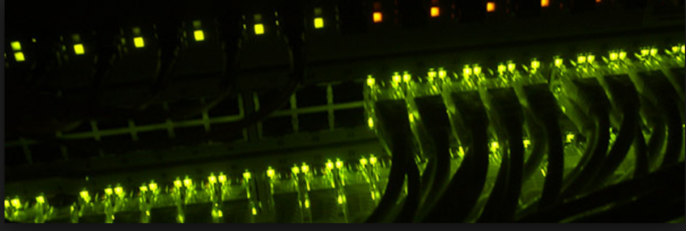
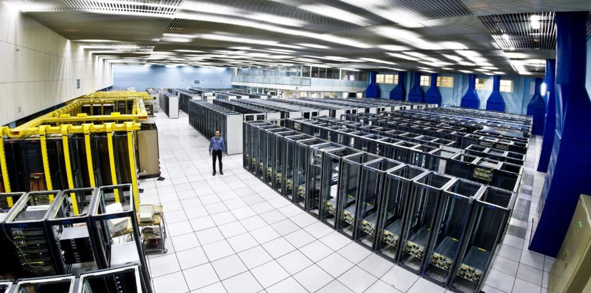

Data Center Robotics
Weidong Shao
Objective
- Provide unattended Data Center Operations
- Reduce necessity of human access to the physical lab
- Remotely controlled robots to perform easy fixes
- Remote physical fault detection
Current Difficulties
- Some operations in data centers are time-consuming
- Excessive human operations in lab are more error-prone
- No fast hardware issue detection
Data center drone
- Flying robot that can fly to each check point setup by operation team
- Robot can roam in the data center to check on rack server status
Feature I: Server Status
- Real-time video view of rack, server back and front panels
- With proper training, robot will be smart enough to understand the LED screen of rack servers
- The status of servers will be reported to the lab admin
Feature II: Network Device Status

- Robot can learn if a device is a networking device and take pictures of the back
- Image will be processed and information will be retrieved and analyzed
- Networking status will be reported to the lab/networking admin
Feature III: Remote Control
- Lab admins and operators can also use the remote control to check on the data center

Feature IV: Other
- Collect thermal information for all racks and draw a heat map. Data can be used for server and network performance analytics
- Use robot to reset servers
- Use robot for inventory tracking (RFID)
- Use robot to check cooling system status
Next-gen server and smart racks should allow swap of units, or hard-disks etc through robots>
Questions?
Email: weidong.shao@huawei.com
w00754682